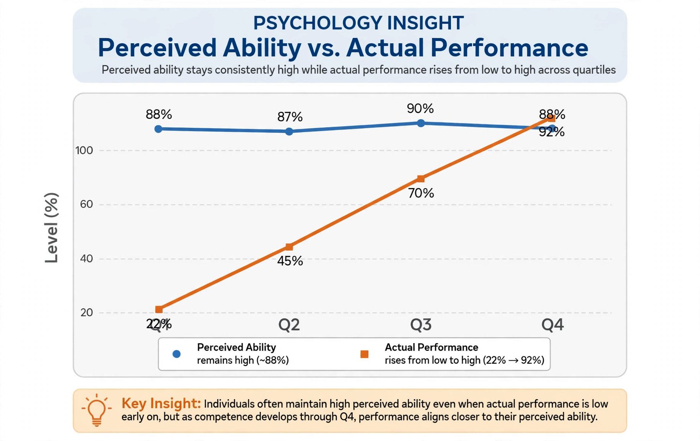

From Wikipedia, the free encyclopedia
| Dunning–Kruger effect | |
 Perceived versus actual performance by quartile in the original studies | |
| Field | Social psychology |
| Proposed by | Justin Kruger and David Dunning |
| Year | 1999 |
| Type | Cognitive bias |
| Summary | Low performers overestimate their ability; top performers slightly underestimate theirs |
The Dunning–Kruger effect is a cognitive bias in which people with limited competence in a particular domain overestimate their abilities. It was first described by the social psychologists Justin Kruger and David Dunning in 1999. Their Cornell University studies found that participants who scored in the bottom quartile on tests of humour, grammar and logical reasoning grossly overestimated their test performance and ability, placing themselves, on average, near the 62nd percentile when they had actually scored near the 12th. Conversely, high performers slightly underestimated their relative standing, assuming tasks easy for them were easy for others.
Kruger and Dunning attributed the effect to a metacognitive deficit: the skills needed to produce correct responses are the same skills needed to recognise competence in oneself and others, so the incompetent suffer a "dual burden" of making errors and being unable to recognise them. They were inspired in part by the case of McArthur Wheeler, a bank robber who believed lemon juice rendered him invisible to security cameras. The authors also found that a short training intervention in logical reasoning improved low performers' ability to assess themselves accurately. Dunning has summarised the idea as: "If you're incompetent, you can't know you're incompetent."
Later analyses have argued that much of the classic pattern can be produced statistically, by the combination of regression to the mean and a general better-than-average effect, and that random data can generate similar graphs. Krueger and Mueller (2002) made an early version of this critique; more recent studies (e.g. Gignac and Zajenkowski, 2020) found the effect much reduced when measured with objective tests and modern methods, while other researchers report a genuine residual effect. The popular internet version of the effect — a curve in which novices crest "Mount Stupid" before descending into a "valley of despair" on the way to expertise — does not appear in the original paper and is not supported by its data.
The effect is frequently invoked in discussions of politics, expertise and workplace competence, and is related to earlier observations such as Bertrand Russell's remark that "the stupid are cocksure while the intelligent are full of doubt". In 2000, Kruger and Dunning were awarded the satirical Ig Nobel Prize in Psychology for their report.